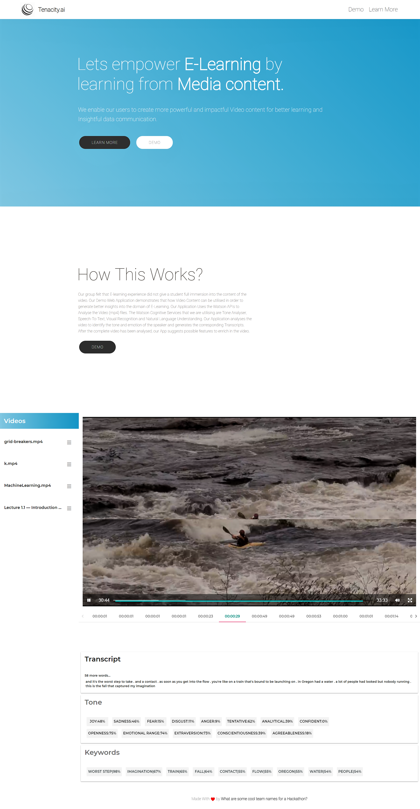

Tenacity.AI
Abstract
Web app that simplifies the process of gaining insights from videos. With the help of Emotional (Tone) and Speech to text analysis Watson API's, Tutors can monitor their Lecture Delivery Style. Also, they can generate transcripts (Real Time) of their video lectures. Further, with the help of Natural Language Understanding, it extracts useful Keywords from these transcripts and are automatically linked to Wikipedia thus provoking better learning by the students. Tenacity.AI is a web app that simplifies the process of gaining Insights from Visual content(mp4) that is helpful for both Tutors and Students. With the help of Emotional(Tone) and Speech to text analysis, Tutors can Monitor their Lecture Delivery Style and productivity. Also, They can generate transcripts (Real Time) of their video lectures. Further, with the help of Natural Language Understanding, Tenacity.AI extracts useful Keywords from Lengthy Lectures or complicated Jargons and thus provokes better learning by the students. Each of these keywords generated in real-time are automatically linked to Wikipedia pages for further information.
Research
Why Tenacity?
- We want to enable educational content creators to create more Powerful and Impactful Video content for better learning and Insightful data communication in the process of E-Learning.
- Educational Video content creators are often confused about whether their content is impactful on the students.
What Tenacity will help with?
- Tenacity.AI is a web app that simplifies the process of gaining Insights from Visual content(mp4).
- Tenacity.AI is a tool that is helpful for both Tutors and Students.
- With the help of Emotional(Tone) and Speech to text analysis, Tutors can Monitor their Lecture Delivery Style and productivity. Also, They can generate transcripts (Real Time) of their video lectures.
- Further, with the help of Natural Language Understanding, Tenacity.AI extracts useful Keywords from Lengthy Lectures or complicated Jargons and thus provokes better learning by the students. Each of these keywords generated in real-time are automatically linked to Wikipedia pages for further information.
Solution
How Tenacity works?
- Our group felt that E-learning experience did not give a student full immersion into the content of the video. Our Demo Web Application demonstrates that how Video Content can be utilized in order to generate better insights into the domain of E-Learning.
- Our Application Uses the Watson APIs to Analyze the Video (mp4) files. The Watson Cognitive Services that we are utilizing are Tone Analyzer, Speech-To-Text and Natural Language Understanding. Our Application analyses the video to identify the tone and emotion of the speaker and generates the corresponding Transcripts.
- After the complete video has been analyzed, our App suggests possible features to enrich in the video.
Prototype

Reflections
Final Feature Video
Following is the video showcasing the final project in a short demo. This was presented at the IBM Machine Learning Hackathon and it won 2nd Position overall, amongst 100 teams.